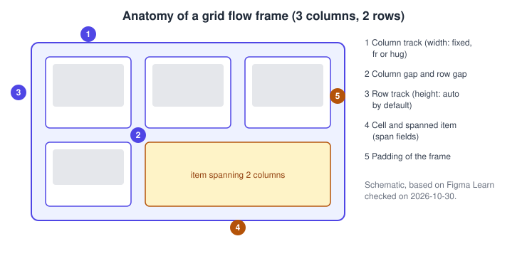
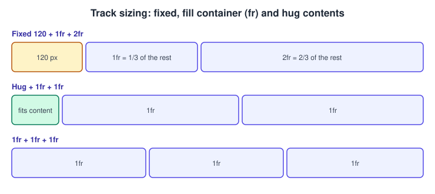
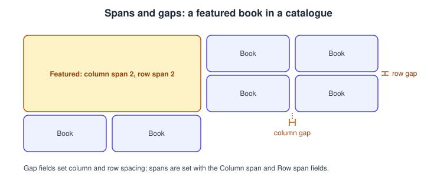
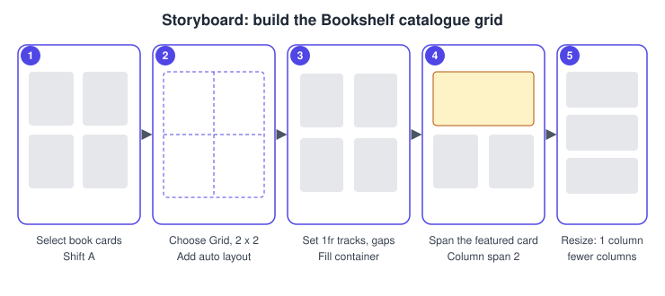
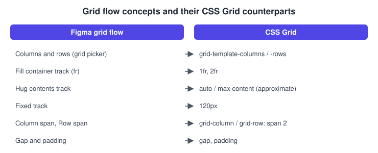

Grid Flow in Auto Layout
|
This content was generated with the assistance of AI and should be verified against the official documentation before being relied on in production. |
This page was written on 2026-10-30 against the UI3 interface of Figma Design. The grid flow is one of the flows of auto layout, next to horizontal and vertical. Figma Learn lists it as available on all plans and it needs edit access to the file, which means a Full seat; View and Collab seats can inspect a grid but not change it. The release history gathered for this section puts general availability at 2026-05-22; the help articles consulted do not label the grid flow as beta, but check the Figma release notes if exact status matters to you. Details of the other flows are on Auto Layout.
The running example is the Bookshelf catalogue: a screen of book cards that shows a featured book larger than the rest and reflows when the screen gets narrower. Responsive behaviour across breakpoints is covered on Responsive Design.
Do not confuse this feature with the uniform grid of layout guides, which only draws a visual overlay (see Masks, Constraints and Layout Guides). A grid flow actually positions and sizes its children.
What a grid flow is
In a horizontal or vertical flow, children follow one line and can wrap. In a grid flow children occupy cells defined by columns and rows, so layers line up in both directions and can span several cells. This suits galleries, bento layouts and dashboards that resize with their frame. Objects in a grid do not wrap onto a new line the way they do in the other flows; they fill cells in order, left to right and top to bottom.

Adding a grid flow
In UI3 select the layers or a frame and press Shift A, or choose Add auto layout in the right sidebar. Figma suggests a flow, and you can switch it to Grid at any time from the auto layout section of the right sidebar. Option or Alt with Shift A removes auto layout. Padding and gap apply to every flow. The Auto gap choices (Between, Around, Evenly) are described for horizontal and vertical frames only.
Columns and rows
Set the number of columns and rows in the grid picker of the right sidebar, either by typing numbers (math operators such as + and * are accepted in these fields) or by using the interactive selector. Rows default to Auto, so empty rows are removed. Tracks can be reordered by dragging their grabber, and the objects spanning them move along. Pressing Delete or Backspace on a selected track removes it together with its contents; lowering the count instead moves the objects into nearby cells.
Track sizes
Each column and row track takes one of three sizes. Min and max limits can be combined with them.
| Size | Behaviour |
|---|---|
Fixed |
Dragging the edge of a track gives it a fixed size. |
Fill container |
Fractional units (fr): a track receives its fr value divided by the total fr on that axis. |
Hug contents |
The track, or the frame, shrinks to fit its children and the spacing. |
Typing A or Auto into a track sets it to 1fr.

Spans and cell alignment
An item can span several columns and rows. Set it to Fill container and resize it until it snaps to the cell edges, or type the Column span and Row span values. The cells it covers have to be free first. A child can also be aligned to its cell (left, center, right, top or vertical center) in the Position section of the right sidebar. Automatic positioning is on by default; turning it off keeps empty cells, and turning it on again resets the rows to Auto.

Gaps and padding
Two gap fields set the space between columns and between rows. Padding can be uniform, per axis or per side, and accepts CSS-style shorthand. Tab moves between the padding fields.
Procedure: the Bookshelf catalogue grid

-
Place six book cards on a mobile frame and select them.
-
Press Shift A, then switch the flow to Grid in the right sidebar.
-
Set the grid picker to 2 columns; rows stay on Auto.
-
Set both column tracks to Fill container (1fr), and set the column and row gap, for example to 16.
-
Select the first card, set it to Fill container, and enter a Column span of 2. Delete or move any card that was in the way.
-
Drag the frame edge or switch frame presets to check that the grid reflows; if the cards are too narrow, change the column count or nest a vertical frame.
Combining flows
An auto layout frame can contain other auto layout frames, so horizontal, vertical and grid flows can be mixed. Each nested frame has its own padding and gap. A typical Bookshelf card is a vertical frame (cover, title, button) placed as a child of the catalogue grid. Give parent frames a temporary fill or stroke so their resizing is visible.
-
Build the book card as a vertical flow and set its width to Fill container.
-
Select the catalogue grid and place the card in a cell, then duplicate it to fill the cells.
-
For a featured card, set Column span to 2 and use a larger text size inside it.
Mapping to CSS Grid

The mapping above is an approximation for orientation, and Hug contents does not match auto in every case. Fixed 120 px, 1fr and 2fr columns correspond to a CSS definition such as grid-template-columns: 120px 1fr 2fr. Figma also publishes a guide on designing auto layout with CSS in mind; frames created before the CSS-like layout version arrived can behave differently.
Common mistakes
-
Treating the layout-guide grid as an auto layout grid: it positions nothing.
-
Applying constraints to children of a grid; constraints work only on children that ignore auto layout.
-
Expecting items to wrap: a grid does not wrap, set the column count instead.
-
Spanning over occupied cells without clearing them first.
Where older guides are outdated
Guides and books written before 2025 show only horizontal and vertical flows without wrap, and their click paths follow the old interface that was retired on 2025-04-30. The grid flow, wrap and the CSS-like layout version are newer. Source: Figma release notes